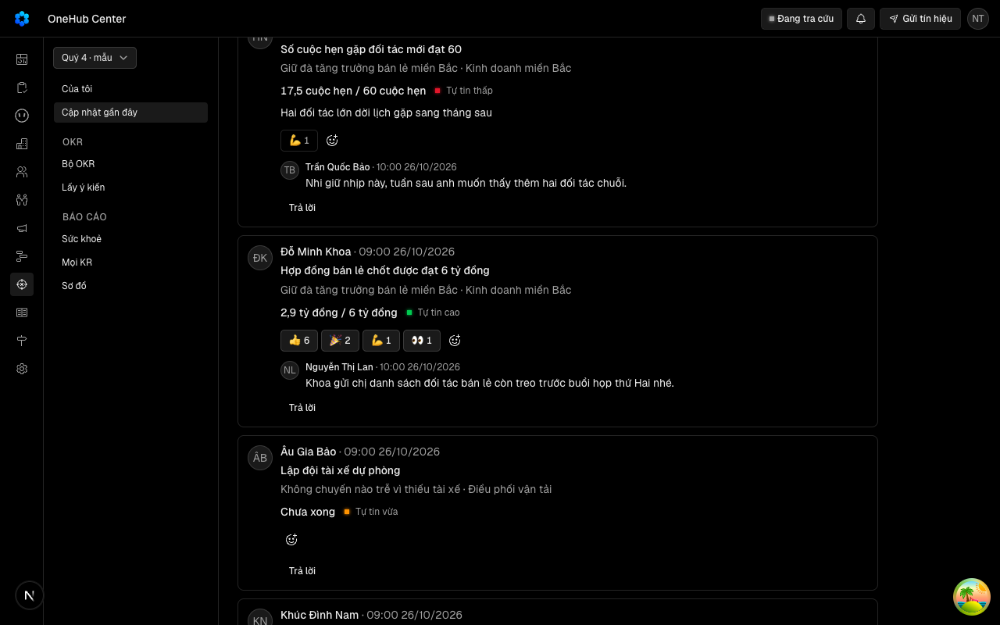

VK12 mang trả lời dưới từng lần cập nhật; chưa có cách ghi nhận nhẹ hơn một câu trả lời. Tability có Reply và Like trên từng check-in ở ba chỗ: Recent updates, ngăn KR, trình chiếu.
docs/superpowers/specs/2026-10-27-cam-xuc-tren-cap-nhat-design.md
| Eval | Tiêu chí | Loại | Verdict | run_id | verified_at |
|---|---|---|---|---|---|
| E1 | AC-1 | test | PASS | minted-cam-xuc-tren-cap-nhat-E1-r2 | 2026-10-27T23:33:05Z |
| E2 | AC-2 | test | PASS | minted-cam-xuc-tren-cap-nhat-E2-r2 | 2026-10-27T23:33:05Z |
| E3 | AC-3 | test | PASS | minted-cam-xuc-tren-cap-nhat-E3-r2 | 2026-10-27T23:33:05Z |
| E4 | AC-4 | script | PASS | minted-cam-xuc-tren-cap-nhat-E4-r2 | 2026-10-27T23:33:05Z |
| E5 | AC-5 | test | PASS | minted-cam-xuc-tren-cap-nhat-E5-r2 | 2026-10-27T23:33:05Z |
| E6 | AC-6 | test | PASS | minted-cam-xuc-tren-cap-nhat-E6-r2 | 2026-10-27T23:33:05Z |
| E7 | AC-7 | test | PASS | minted-cam-xuc-tren-cap-nhat-E7-r1 | 2026-10-27T22:52:20Z |
| E8 | AC-7 | test | PASS | minted-cam-xuc-tren-cap-nhat-E8-r2 | 2026-10-27T23:33:05Z |
| E9 | AC-8 | test | PASS | minted-cam-xuc-tren-cap-nhat-E9-r1 | 2026-10-27T22:52:20Z |
| E10 | AC-9 | ui-check | PASS | minted-cam-xuc-tren-cap-nhat-E10-r2 | 2026-10-27T23:33:05Z |
| E11 | AC-10 | test | PASS | minted-cam-xuc-tren-cap-nhat-E11-r1 | 2026-10-27T22:52:20Z |
| E12 | AC-2 | test | PASS | minted-cam-xuc-tren-cap-nhat-E12-r2 | 2026-10-27T23:33:05Z |
AC-1: (cross-layer) Given một lần cập nhật của mục tiêu người xem được thấy, When người ấy chạm một cảm xúc dưới lần đó ở Cập nhật gần đây, Then `okr.thaCamXuc` ghi đúng một hàng `okrCamXuc` (lần cập nhật, người, loại) và một dòng vết `tha-cam-xuc`, trả tóm tắt cảm xúc mới của lần đó; chip của loại ấy hiện ngay dưới dòng với số tăng 1 và ở trạng thái đã thả của người xem, không tải lại trang.
cmd: bun run test -- "cd apps/api && bun test test/okr-cam-xuc.spec.ts -t cx-tha" test-run: dropped crm_mvrbnc986yjc_test
AC-2: (cross-layer) Given người xem đã thả một loại trên một lần cập nhật, When chạm lại đúng chip ấy, Then hàng của người ấy bị xoá, một dòng vết `go-cam-xuc` được ghi, số giảm 1 và chip biến mất khi về 0; một người có tối đa một hàng mỗi (lần cập nhật, loại) và thả nhiều loại khác nhau được; hai lần chạm đồng thời cùng loại để lại đúng một hàng hoặc không hàng nào, không lỗi hiện ra màn; chip đổi ngay khi chạm và bị tắt tới khi máy chủ trả; thả hỏng (chu kỳ đã ẩn, mất mạng) thì chip trở về đúng số và trạng thái trước khi chạm và một toast nói vì sao.
cmd: bun run test -- "cd apps/api && bun test test/okr-cam-xuc.spec.ts -t cx-dao" test-run: dropped crm_mvrbnahubbft_test
AC-3: (cross-layer) Given một lần cập nhật có cảm xúc của nhiều người, When đọc `okr.capNhatGanDay`, `okr.hopTuan` (khi đó là lần mới nhất của KR) và `okr.dienBien` (khi đó là lần cuối của tuần), Then cả ba trả `checkInId` của lần ấy cùng một tóm tắt cảm xúc, bằng đúng tập hàng `okrCamXuc` của lần ấy; dòng Họp tuần của KR chưa có lần cập nhật mang `checkInId` rỗng và không có cảm xúc; And số truy vấn của mỗi thủ tục không đổi khi số lần cập nhật hay số cảm xúc tăng.
cmd: bun run test -- "cd apps/api && bun test test/okr-cam-xuc.spec.ts -t cx-ba-cho" test-run: dropped crm_mvrbna38u0ct_test
AC-4: Given phiên đo có dữ liệu mẫu, When người mẫu thả một cảm xúc ở Cập nhật gần đây rồi, trong cùng phiên không tải lại, mở thẻ con Họp tuần của bộ ấy và ngăn KR của KR ấy, Then cả hai chỗ hiện chip của loại ấy với cùng số và ở trạng thái đã thả; chạm lại ở ngăn KR thì chip ở Cập nhật gần đây cũng gỡ khi quay lại.
cmd: EVAL=${EVAL:-} bun scripts/lan-do/tien-de.mjs --chay "bun _acceptance/cam-xuc-tren-cap-nhat/rang/do-man.mjs"
phien-do: xong — mã 0
AC-5: Given một lần cập nhật có cảm xúc, When người cập nhật (hay bất kỳ ai xem được) di chuột lên một chip trên máy tính, hoặc chạm nút «Thả cảm xúc» ở bất kỳ khổ nào, Then tooltip của chip nêu tên người đã thả loại ấy, cũ trước, tới `OKR_CAM_XUC.tenToiDa` tên rồi «và n người khác»; bảng của nút «Thả cảm xúc» có hàng bốn cảm xúc và, dưới đó, mọi loại đã có người thả kèm đủ tên — ở 375 chạm nút mở bảng mà không đảo cảm xúc nào; mỗi chip có nhãn đọc màn hình gồm tên loại, số người và «bạn đã thả» khi đúng.
cmd: cd packages/ui && TZ=Asia/Ho_Chi_Minh bun test --timeout 10000 --preload ./test/setup-dom.ts ./test/thanh-cam-xuc.dom.tsx -t cx-thanh Ran 8 tests across 1 file. [731.00ms]
AC-6: (cross-layer) Given một OKR giới hạn mà người xem hẹp không được xem, When người ấy gọi `okr.thaCamXuc` với một lần cập nhật của OKR ấy, Then nhận `khongThayMucTieu` như một id không tồn tại và không hàng nào được ghi; `okr.addComment` mang `checkInId` của lần ấy (dưới mục tiêu khác người ấy xem được, có hay không `keyResultId`) cũng nhận đúng câu ấy và không ghi; cảm xúc và `checkInId` của OKR ấy không có trong `capNhatGanDay`, `hopTuan`, `dienBien` của người ấy, và tên người xem hẹp không lọt vào tóm tắt của OKR khác; chu kỳ đã ẩn thì `thaCamXuc` bị từ chối; chu kỳ đang chấm điểm hay đã đóng thì thả được (Hỏi-4, soạn theo khuyến nghị); người mang vai «chỉ OKR» gọi được thủ tục; And `soi-ma.mjs --ca xem` biết `okrCamXuc` và xanh.
cmd: bun run test -- "cd apps/api && bun test test/okr-cam-xuc.spec.ts -t cx-quyen && bun test test/vai-chi-okr.spec.ts -t 'ma-tran-trpc|danh sach viet truoc'" && bun _acceptance/gioi-han-duyet-cay-okr/rang/soi-ma.mjs --ca xem XANH
AC-7: (cross-layer) Given mọi dòng của Cập nhật gần đây, When người xem bấm «Trả lời» dưới một lần cập nhật bất kỳ (không riêng lần mới nhất), gõ và Gửi, Then `okr.addComment` ghi bình luận mang đúng `checkInId` và KR của lần ấy; dưới mỗi dòng hiện đúng các bình luận mang `checkInId` của dòng ấy, cũ trước, kể cả dòng cũ; bình luận vẫn hiện ở thẻ Trao đổi của mục tiêu; `checkInId` của KR khác cùng mục tiêu bị từ chối bằng `capNhatKhacKr`, `checkInId` thuộc mục tiêu khác bị từ chối bằng `khongThayMucTieu`; nhắc tên người cập nhật giữ như VK12.
carry-forward tu round 1 — delta khong cham paths cua eval
AC-7: (cross-layer) Given mọi dòng của Cập nhật gần đây, When người xem bấm «Trả lời» dưới một lần cập nhật bất kỳ (không riêng lần mới nhất), gõ và Gửi, Then `okr.addComment` ghi bình luận mang đúng `checkInId` và KR của lần ấy; dưới mỗi dòng hiện đúng các bình luận mang `checkInId` của dòng ấy, cũ trước, kể cả dòng cũ; bình luận vẫn hiện ở thẻ Trao đổi của mục tiêu; `checkInId` của KR khác cùng mục tiêu bị từ chối bằng `capNhatKhacKr`, `checkInId` thuộc mục tiêu khác bị từ chối bằng `khongThayMucTieu`; nhắc tên người cập nhật giữ như VK12.
cmd: cd apps/app && TZ=Asia/Ho_Chi_Minh bun test --timeout 10000 --preload ../../packages/ui/test/setup-dom.ts ./test/cap-nhat-gan-day.dom.tsx -t cx-tra-loi-man Ran 1 test across 1 file. [1322.00ms]
AC-8: (cross-layer) Given cơ sở dữ liệu có bình luận gắn KR viết trước migration, When migration chạy, Then bảng `okrCamXuc` và cột `okrComment.checkInId` có trong cùng một migration; mỗi bình luận gắn KR mang `checkInId` của lần cập nhật muộn nhất của KR ấy có thời điểm không sau lúc viết bình luận, bình luận viết trước lần đầu và bình luận không gắn KR giữ rỗng (Hỏi-2, soạn theo khuyến nghị); And mọi lần trả lời VK12 đang hiện dưới lần mới nhất của một KR vẫn hiện dưới đúng dòng ấy sau migration.
carry-forward tu round 1 — delta khong cham paths cua eval
AC-9: Given ba màn với dữ liệu mẫu, When chụp ở 1280 và 375 các trạng thái ST-camxuc-trong, ST-camxuc-co, ST-camxuc-cua-toi, ST-camxuc-dang-gui, ST-camxuc-loi, ST-camxuc-nhieu, ST-camxuc-bang, ST-cng-traloi-moi-dong và ST-hop-chua-cap-nhat, Then mỗi trạng thái hiện như bảng trạng thái của design doc; ở 375 hàng chip xuống dòng trong khối của dòng, trang không tràn ngang; Tab tới được từng chip và nút «Thả cảm xúc», Enter hay Space đảo, Esc đóng bảng cảm xúc.

Anh du 8 loai Expected, da mo bang Read: cng-1280.png, cng-375.png, hop-1280.png, hop-375.png, ngan-1280.png, ngan-375.png, tooltip-1280.png, bang-375.png; them hop-chua-cap-nhat-1280.png, hop-chua-cap-nhat-375.png (tat ca duoi _acceptance/cam-xuc-tren-cap-nhat/evidence/). Fallback: khong dung capture.ui; anh do chinh ban do do-man.mjs chep ra (CX_CHEP_ANH=1), khong tao E10-stepN.png rieng. Driver la script bun (khong phai browser tool) nen khong co E10-network.txt, network_observed = n-a (driver). Luu y nho (khong lam sai Expected): ngan-1280.png chup luc ngan KR dang truot vao (noi dung bi cat mep phai); bang-375.png bang cam xuc hoi trong suot, chong len noi dung phia sau, nhung van doc duoc bon cam xuc va danh sach ten tung loai. Khong start server rieng (tien-de tu dung phien do rieng crm_dazzling_bohr_10e829_do va tu don).
AC-10: Given bộ OKR mẫu (`bun run okr:mau`), When nạp, Then có cảm xúc ghi qua `thaCamXuc` và trả lời mang `checkInId` ghi qua `addComment` (không chèn thẳng bảng), đủ để hơn một nửa lần cập nhật của tuần gần nhất có phản hồi và ít nhất một lần có đủ bốn loại với hơn `tenToiDa` người; nạp lại không nhân đôi; And `rang/ty-le-phan-hoi.sql` chạy trên bộ mẫu in đúng tỷ lệ viết trước của bộ ấy.
carry-forward tu round 1 — delta khong cham paths cua eval
AC-2: (cross-layer) Given người xem đã thả một loại trên một lần cập nhật, When chạm lại đúng chip ấy, Then hàng của người ấy bị xoá, một dòng vết `go-cam-xuc` được ghi, số giảm 1 và chip biến mất khi về 0; một người có tối đa một hàng mỗi (lần cập nhật, loại) và thả nhiều loại khác nhau được; hai lần chạm đồng thời cùng loại để lại đúng một hàng hoặc không hàng nào, không lỗi hiện ra màn; chip đổi ngay khi chạm và bị tắt tới khi máy chủ trả; thả hỏng (chu kỳ đã ẩn, mất mạng) thì chip trở về đúng số và trạng thái trước khi chạm và một toast nói vì sao.
cmd: cd apps/app && TZ=Asia/Ho_Chi_Minh bun test --timeout 10000 --preload ../../packages/ui/test/setup-dom.ts ./test/cap-nhat-gan-day.dom.tsx -t cx-lac-quan Ran 4 tests across 1 file. [1.94s]
chưa gộp vào onehub (nhánh production kho khai)